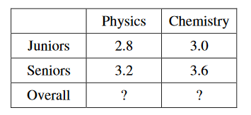

Administrators at a state university computed the mean GPA (grade point average) for juniors and seniors majoring in either physics or chemistry. The results are displayed in the table below. When juniors and seniors are grouped together, could physics majors have a higher mean GPA than chemistry majors?
